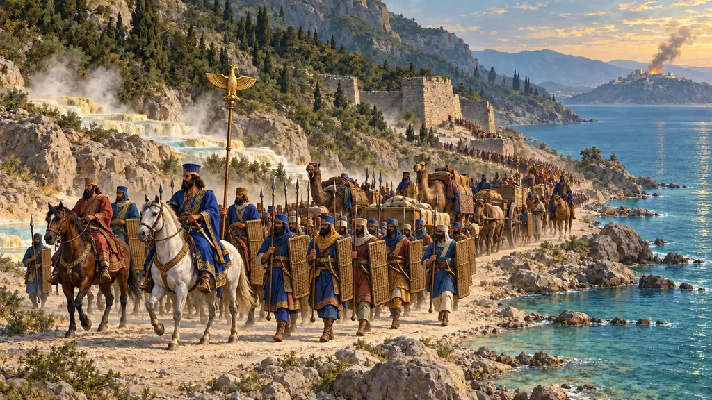
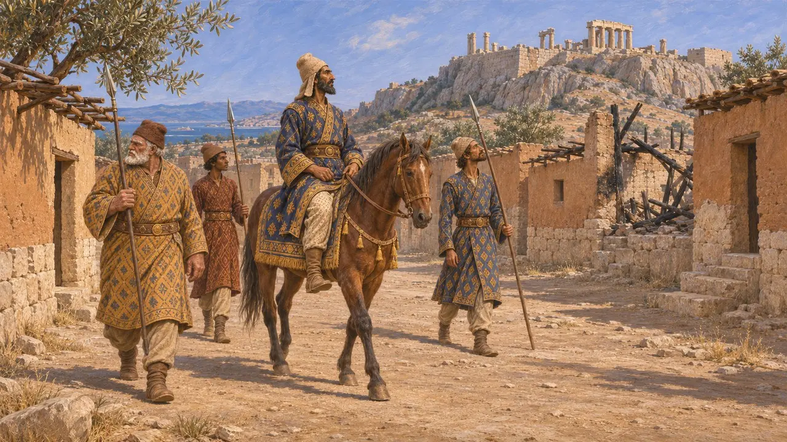
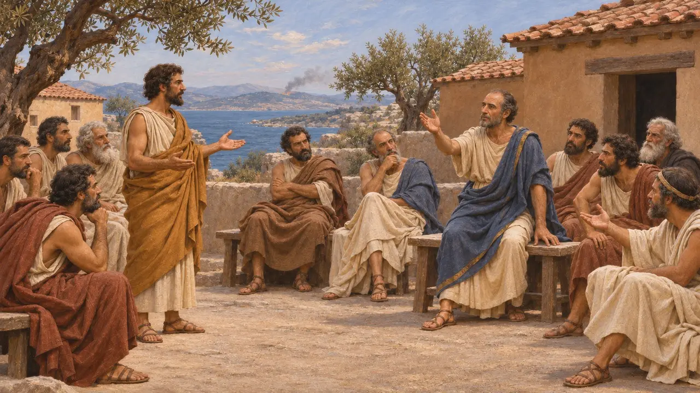
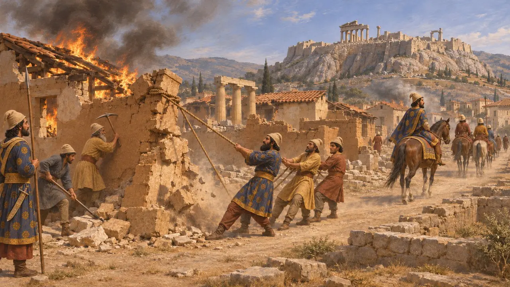
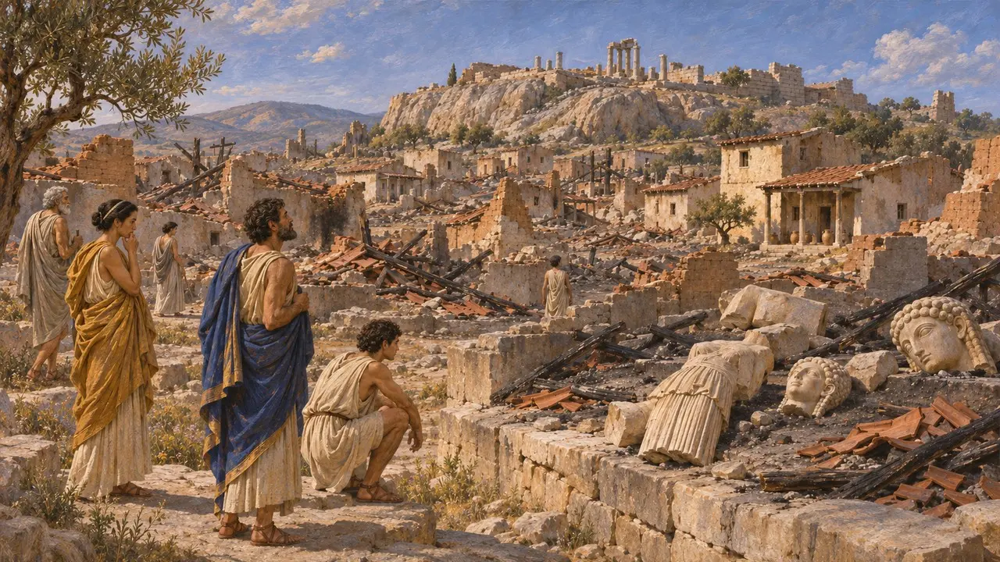
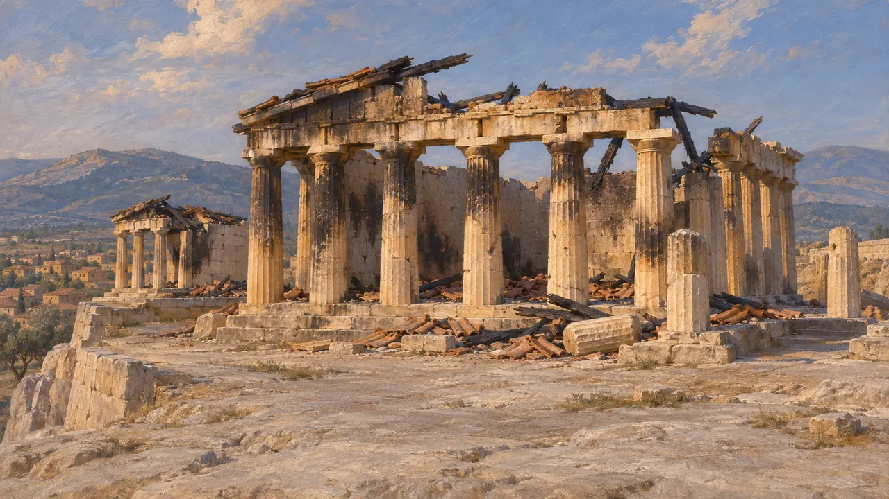

Enciclopédia › Batalhas e eventos

A tomada de Atenas por Mardônio
Segunda ocupação persa e incêndio de Atenas, verão de 479 AEC
No jogo: Nível 11: O Final
No verão de 479 AEC, Mardônio, deixado na Grécia por Xerxes, marchou para a Ática e tomou Atenas vazia pela segunda vez. Ao saber que um exército espartano estava em marcha, queimou o que ainda estava de pé e recuou para a Beócia, onde pouco depois foi travada a batalha de Plateia.
No jogo: A Crônica mostra isto como um evento de 479 AEC: Mardônio retoma Atenas dez meses depois de Xerxes, a incendeia quando os espartanos marcham e recua para a Beócia por causa de sua cavalaria. Isso coincide com Heródoto 9.3 e 9.13.

Mardônio retorna à Ática
Relato antigoHeródoto diz que Mardônio passou o inverno na Tessália e marchou para o sul na primavera. Os tebanos o instaram a ficar na Beócia e conquistar os gregos com subornos. Ele queria Atenas outra vez, em parte para poder enviar a Xerxes, em Sardes, a notícia de sua captura por fogos de sinalização através das ilhas. Encontrou a cidade vazia, dez meses depois de o Rei tê-la tomado, porque os atenienses haviam se mudado de novo para Salamina e para seus navios.
Herodotus 9.1-9.3

A oferta enviada a Salamina
Relato antigoHeródoto diz que Mardônio enviou a Salamina um grego do Helesponto, Murícides, para repetir as condições que Alexandre da Macedônia já havia levado a Atenas. Um conselheiro chamado Lícidas propôs submeter a oferta ao povo, e os atenienses o apedrejaram até a morte. As mulheres atenienses apedrejaram então sua esposa e seus filhos. Os atenienses enviaram emissários a Esparta para se queixar de que seu exército não havia chegado.
Herodotus 9.4-9.11

Incêndio e retirada
Relato antigoHeródoto diz que os espartanos, após um atraso por causa da festa das Jacíntias, enviaram Pausânias com uma grande força, e os argivos avisaram Mardônio. Ele queimou Atenas e derrubou o que restava de muralhas, casas e templos, julgando a Ática um terreno ruim para a cavalaria. Seus cavaleiros devastaram a Mégara, e ele então recuou por Decileia até um acampamento fortificado no Asopo.
Herodotus 9.7-9.15

Ao que os atenienses voltaram
DisputadoTucídides diz que, quando os atenienses retornaram, apenas pequenos trechos da muralha da cidade ainda estavam de pé e a maioria das casas estava em ruínas, exceto algumas em que nobres persas haviam se hospedado. Escavadores na Acrópole encontraram profundos aterros de estátuas quebradas e entulho queimado da destruição persa. Os arqueólogos ainda debatem quanto desse dano pertence a 480 AEC e quanto a Mardônio em 479 AEC.
Thucydides 1.89; J. M. Hurwit, The Athenian Acropolis, 1999

O juramento de não reconstruir
DisputadoEscritores posteriores dizem que os gregos juraram antes de Plateia deixar os templos incendiados em ruínas, como memorial da impiedade persa. Uma versão do juramento inscrita no século IV não contém essa cláusula. Alguns historiadores aceitam uma versão do juramento, enquanto outros pensam que ele foi composto ou remodelado no século IV. Os templos em ruínas da Acrópole de fato permaneceram sem reconstrução por cerca de trinta anos.
Diodorus 11.29; Lycurgus, Against Leocrates 81
Fontes
- Herodotus 9.1-9.15
- Thucydides 1.89
- Diodorus 11.29
- J. M. Hurwit, The Athenian Acropolis, 1999
- P. Briant, From Cyrus to Alexander, 2002
- P. Green, The Greco-Persian Wars, 1996